The Menu Bar
You can display menu items and activate them with the mouse, or
using <Alt>+<letter> generic shortcut,
where <letter> identifies an underlined letter in corresponding menu
label (eg. <Alt>+f to open "File"
menu items)
Some actions are associated with a keyboard shortcut. This shortcut
is indicated next to menu label. A reminder of all keyboard shortcuts
is given in Shortcuts Summary
section.
When there is no open file, the only actions available are: open a
file, open the general speaker dictionary and configure the display,
and the menu bar shows as follow:
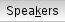
When a file is open, then all editing actions become available, and
the menu bar shows as follow:
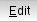
All available menu actions are described below.
File menu
File menu allows basic
operations on file.
|
Open opens a file selection
dialog box, allowing to select the file to open. |
| 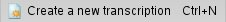 |
Create a new transcription
allows to create a new transcription thanks to audio file(s). |
|
Recent files allows to re-open
one of the 10 most recently opened files. |
| 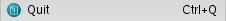 |
Quit allows to quit TranscriberAG. |
| 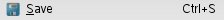 |
Save allows to save the
current annotation file. |
| |
Save as saves the current
annotation file with a new name. A "Save as" dialog box is opened,
through which the user is prompted to input file new name or new
location. |
| 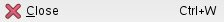 |
Close allows to close the
current opened file. |
| |
Export file allows to export
the current opened file in stm/chat/html/txt or user-defined format. |
| 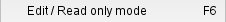 |
Edit/Read only mode allows to
switch within the editor between edit and read-only modes. |
| |
Revert file allows to restore
file from a recent version: |
|
Revert to saved file restores
last saved version of the current file. |
| 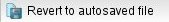
Revert to autosaved file
restores last autosaved version of the current file (which can be more
recent than last saved version). |
 |
Refresh refreshes current
open file and displays current file data. |
>> Back
to top
Edit menu
The Edit menu gives access to
basic
file editing operations.
| 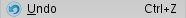 |
Undo cancels previous editing action. |
|
Redo redoes a canceled editing action. |
| 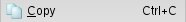
Copy copies selected text area from annotation editor to
selection buffer. |
| 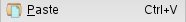
Paste copies selection buffer contents to annotation editor
at current cursor position. |
| 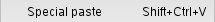
Special paste copies selection buffer contents (including segmentation marks and annotation tags) to annotation editor
at current cursor position. |
| 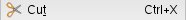
Cut copies selected text area to selection buffer and deletes
it from annotation editor. |
|
Clipboard gives access to the edit clipboard actions when the
clipboard is opened (shortcut: <alt+shift+c>). |
| 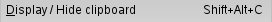
Display/Hide clipboard displays or hides the
clipboard. |
| 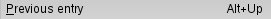
Previous entry selects the previous entry in the
clipboard.
| 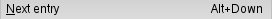
Next entry selects the next entry in the
clipboard.
| 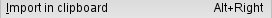 Import
in clipboard puts the selected text in the clipboard.
| 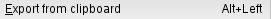 Export
from clipboard puts the clipboard selected entry into the editor buffer at current
cursor position.
| 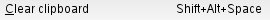 Clear
clipboard clears all entries from the clipboard.
| 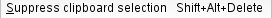
Suppress clipboard selection erases the
selected entry from the clipboard.
| input
language menu allow to select the input
mode for the keyboard. |
| 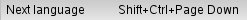
Next language selects next input language. |
| 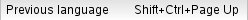
Previous language selects previous input
language.
>> Back
to top
Search menu
The Search menu gives access to
Search and Special search features within the
annotation editor.
| 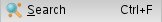 |
Search opens the search bar at the bottom the
window, or the search dialog box, depending on user preferences. |
|
Special search opens a search dialog box that
allows to search turns for a given speaker, or sections for a given theme. |
>> Back
to top
Annotation menu
The Annotation menu gives
access to Annotation Actions.
These actions may vary depending on applicable annotation conventions.
Following menu describes a classical detailed
transcription scheme, with "Section/Turn/Segment" segmentation level
and text-anchored events.
| 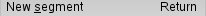 |
New segment inserts a new
segment for current audio cursor value at current text cursor position. |
| 
New turn inserts a new turn at
current segment start. If a turn already exists at segment start, an
overlapping turn will be created, after user confirmation. |
| 
New section inserts a new
section at at current segment start. If no turn exists at segment
start, it will be automatically inserted. |
| 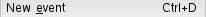
New event inserts a
new event at current text cursor position. New event menu is popped to
select annotation event or foreground event type. These menus are configured by
applicable annotation conventions, and may look like follows: |
| Noise
inserts foreground noise event (for example breathing, general,
conversation, etc...). |
|
Pronounciation annotates pronunciation problems
(eg. unintelligible).
|
Language annotates short scope language
changes.
|
Normalization inserts term normalisation
(dates, numbers,...).
|  Disfluency annotates discourse disfluencies
(hesitation, revision,...).
Disfluency annotates discourse disfluencies
(hesitation, revision,...).
|
Comment inserts a comment.
|
Delete event erases current event.
|
Edits event properties modifies current event
properties (type / subtype).
| 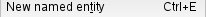 |
New named entity inserts a new
named entity at current text cursor position. Entity menu is popped
to select entity type and subtype. The entity menu is configured by
applicable annotation conventions, and may look like follows: |
| Person
annotates a person identification (human,fictional character, other...) |
|
Location annotates a geographical location name (town, country, region, other...) .
| Time
annotates a time definition (date, hour, other).
| Amount
annotates an amount (currency, other).
|
Product annotates a "commercial" product name (vehicle, art, other).
|
Organization annotates an organization name
(non profit, educative, commercial, other).
|
Unknown marks a scope as unknowned.
| Geo
Socio Politic annotates a geo-socio-political entity.
|
Facilities annotates a facility.
|
others annotates an entity with an undetermined type.
|
Delete named entity erases current entity annotation.
| 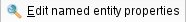
Edit named entity properties modifies current
entity properties.
| 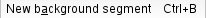 |
New background inserts
a new background segment at current signal cursor position. |
>> Back
to top
Signal menu
The Signal menu allows to
interact with the Audio Widget, to pilot signal playback. Most of the menu actions are also available through keyboard shortcuts.
| 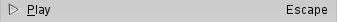 | Play
/ Pause starts or pauses the signal playback. |
|
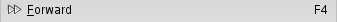 |
Forward allows to skip forward 3 seconds into the signal. |
|
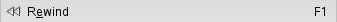 |
Rewind allows to skip backward 3 seconds into the signal. |
|
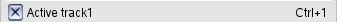 |
Active track 1 sets track 1 as current track for annotation editor (only for stereo file). |
| 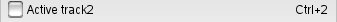 |
Active track 2 sets track 2 as current track for annotation editor (only for stereo file). |
|
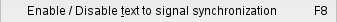 |
Enable / Disable synchronisation of text cursor with signal cursor. |
|
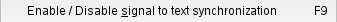 |
Enable / Disable synchronisation of signal cursor with text cursor. |
|
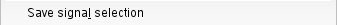 |
Save signal selection saves selected signal portion to file; a file selection dialog is popped. |
|
|
Goto signal position moves signal cursor to user-input position; an input dialog is popped. |
Text to signal synchronization means that text cursor is automatically moved to (end of) segment annotation text corresponding to current signal cursor position when this position changes, either when the user clicks on the signal waveform or when the signal is played. If text cursor is already set in current segment, it is not moved.
Signal to text synchronization means that the signal cursor is automatically moved to the (start of) segment annotation corresponding to the current text cursor position when this position changes. If the signal cursor is already in the current segment, it is not moved.
>> Back
to top
Speakers menu
The Speakers menu gives
access
to global and local Speaker Dictionaries.
| 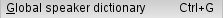
Global speaker dictionary opens the global speaker
dictionary. |
| 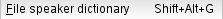
File speaker dictionary opens the speaker dictionary defined for current file.
>> Back
to top
Window menu
The Window menu gives access to windows visibility
menu and application configuration dialog.
|
Show/Hide toolbar shows or hides the
toolbar |
|
Show/Hide status bar shows or hides the status bar (located at bottom) |
|
Show/Hide explorer shows or hides explorer's widget
|
Preferences button shows Configuration popup.
|
Enlarge editor display hides the explorer tree and extends the editor zone to occupy the whole TranscriberAG window. |
|
Previous tab button moves to the previous
edited file.
|
Next tab button moves to the next edited file.
|
Close current page closes current open file
| 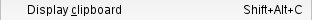
Display clipboard button displays the Clipboard
|
Display file properties button opens the Annotation File Properties
popup. |
>> Back
to top
Help menu
The Help menu gives access to
online
help features.
| About
button gives information about the current
version of TranscriberAG. |
| User
manual button displays this manual.
>> Back
to top
Display menu
The Display menu gives access to display options for annotations layout in the text widget.
| 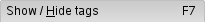
Show/hide tags shows or hides some annotations tags (entities, events, backgrounds, etc.) in the text widget. |
| 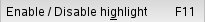
Enable / Disable highlight activates (or disables) current text segment highlight.
| 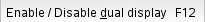
Enable dual display (stereo files) switches between dual and merged display modes. |
>> Back
to top